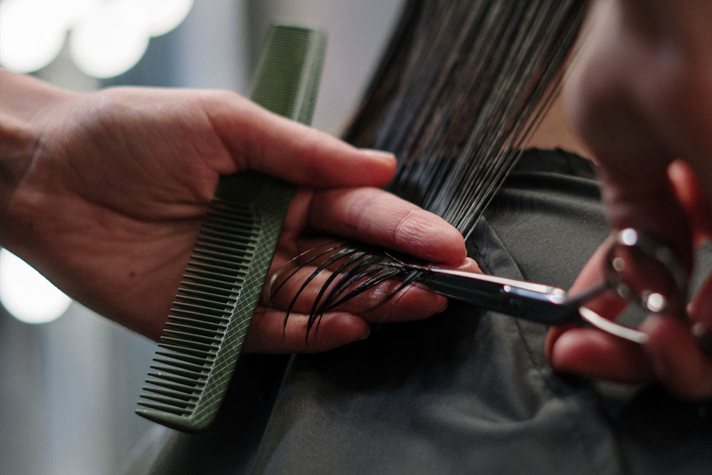

RAFAELA FERRER
IES EL CABANYAL
Vols saber més?
Posa't en contacte amb la coordinadora Rafaela, tècnica del skill Perruqueria
lgonzalez@fpmislata.comRAFAELA FERRER
IES EL CABANYAL
Vols saber més?
Posa't en contacte amb la coordinadora Rafaela, tècnica del skill Perruqueria
lgonzalez@fpmislata.comEs refereix al tractament i cura del cabell, incloent tots els tipus de tècniques de tallada de cabells, arrissat permanent, coloració de pèl, pentinat i disseny de barba. Els requisits són el coneixement de la moda, creativitat i imaginació, juntament amb un alt nivell tècnic, que inclou els enfocaments comercial i artístic.
Cicles formatius relacionats
Aplicacions
Les persones que obtenen els títols exerceixen la seua activitat
en empreses d'imatge personal dedicades als processos de
perruqueria d'ús social, on desenvolupa tasques de: prestació de
serveis, comercialització, aprovisionament...
També quan obtenen el títol de grau superior exerceixen la seua activitat com a directors de processos de perruqueria en empreses dedicades al sector i en produccions audiovisuals i escèniques, on desenvolupen tasques individuals i en grup en les àrees funcionals de disseny i innovació, organització i prestació de serveis, comercialització, logística...
RAFAELA FERRER
IES EL CABANYAL
Vols saber més?
Posa't en contacte amb la coordinadora Rafaela, tècnica del skill Perruqueria
lgonzalez@fpmislata.com